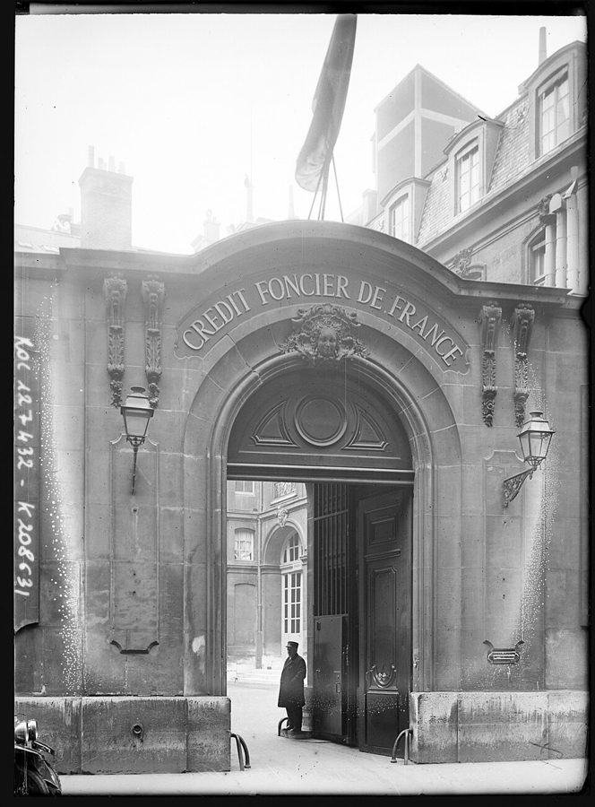
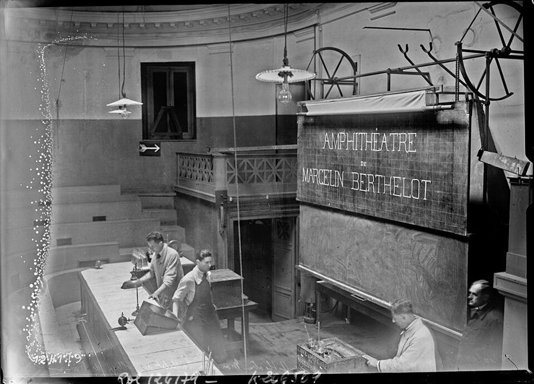
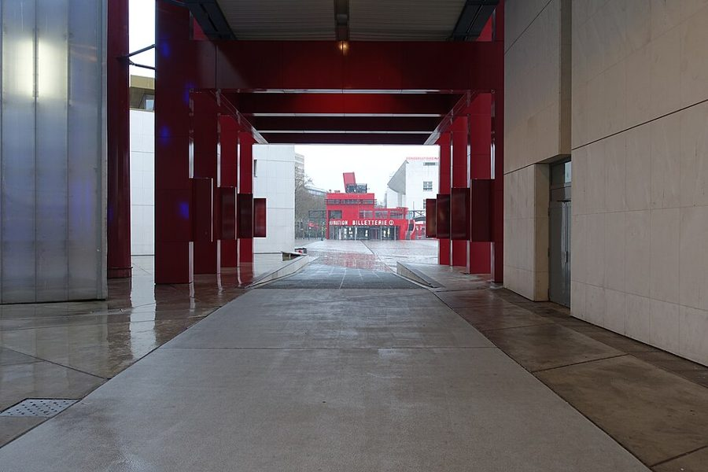

这一篇在做什么
1996 到 1997 年的冬天，巴黎很冷，作者说比实际更冷：法国人善于把一种情绪演成大家一起看的戏。这一篇把那个冬天几场和经济有关的「戏」串在一起：一家银行的员工扣押了行长，全国热议 55 岁退休，一本叫《经济恐怖》的书大卖，知识界为反移民法案签名上街，盖茨和哈贝马斯先后来访。读的时候抓两条线：每场戏的「象征」和「实际」差在哪里；作者每到一处都拿美国来照一照。

法国土地信贷银行（Crédit Foncier de France）在巴黎卡皮西纳街（rue des Capucines）的大门，1928 年。这一篇从这家银行的员工扣押行长讲起。Agence Rol，公有领域，维基共享资源 读之前：这篇的来历
这一篇写在 1997 年 2 月底、3 月初：文中能确定日期的事，最晚是 2 月底反移民法案的大游行和那条规定的撤回。政府还是朱佩（Alain Juppé）领导的右派政府。作者一家到巴黎一年半，儿子两岁多，但这一篇几乎不写家里，写的是公共生活。它在第二部分「远方的错误」，前一篇写作者在巴黎找健身房，后一篇写花神和双叟两家咖啡馆。§1 有一段回头说到上一个冬天的大罢工，就是第 3 篇写的那一场。作者在第 1 篇说过，这几年人人都在给法国「看病」；这一篇可以当作他对这种诊断的一次回应来读（本站的看法）。
那个冬天法国人感到的「经济恐怖」，有多少是真的，有多少是演出来的？
读的时候带着这几个问题。不用先找答案，读完回来对照「检查一下理解」。
作者说扣押行长、游行人群都有「象征」的一面和「实际」的一面。你读到的哪一场戏，两面差得最远？§1 §4 §5
「大家早点退休，失业的人就有活干」，这个主意是从哪里来的？作者觉得它荒唐，还是情有可原？§1 §2
作者几乎每一节都拿美国作比。这些比方是在替法国说话、笑话法国，还是两边都笑？§2 §3
这一篇的路线
开头一段先立一个框子：冷是大家一起演出来的，接着把要讲的几场戏点了名，后面大体照这张单子一场一场讲。看上去像流水账，读的时候抓两样：一是作者每讲一场戏，都要把它的「象征」和「实际」分开，§1 第五段把这个方法说破了；二是右边那面美国的镜子，几乎每一节都照一下，只有 §4 没有。§2 突然讲起巴黎的老人和佛罗里达，是在给退休热找文化上的根，不是跑题。最后一段又回到开头那位行长，绕一圈收住。
法国这边的戏
拿来对照的美国
开头的框子：一个「演出来」的冷冬
§1
§2
§3
§4
§5
员工扣押行长
55 岁退休热
巴黎的老人、听讲座的退休族
《经济恐怖》畅销
凯恩斯派的药方
德勃雷法案和请愿
儿童音乐会上的训话
盖茨来访
哈贝马斯讲学
行长回家，55 岁
美国的「裁员」
海盗船似的财经杂志
佛罗里达的养老区
「黑色直升机」
英美报刊的市场诗意
（这一节不照镜子）
1908 年的莱特
结尾回到开头
本站示意图。左栏按阅读顺序排列这一篇串起来的几场戏，右栏是作者在同一处拿来对照的美国（§3 还有英国），虚线连着同一处的对照，横虚线是原书的分隔，左边的弧线是最后一段回到开头。 作者落在哪： 作者认为法国人自己也在夸大这场危机：失业是真的，其余造成危机感的问题多半是对将来的害怕，借一场场象征性的戏演出来。他对早早退休的向往有几分体谅，对《经济恐怖》毫不客气，也承认理性的药方打动不了人：法国有国家的高调，却没有赞美做买卖的诗。
分节地图
原书这一篇有四处分隔，分成五节。每一节的粗体是读译本时认得出的场面；下面的斜体是英文这一节开头的几个词，打开电子书搜它就能跳到那里。读完一节打个勾。
银行员工扣押行长，卡车司机争到 55 岁退休约 1000 词 It was a very cold winter … 先立「冷是演出来的」这个框子，点名几场戏。留意第五段怎么分开象征和实际。 巴黎拄拐的老人，佛罗里达，听讲座的退休族约 300 词 The national craze for early retirement … 给退休热找文化的根：美国人怕退休，法国人不怕。 「白色直升机」和一本叫《经济恐怖》的畅销书约 600 词 Not long ago somebody referred to … 从一本书说到凯恩斯和欧洲条约。末尾一句是全篇分量最重的判断之一。 德勃雷法案，请愿书，东站的「遣送」约 300 词 By the end of February a new … 全篇唯一不拿美国作比的一节。留意作者对抗议者也有保留。 儿童音乐会、盖茨、哈贝马斯，行长回家约 600 词 On a recent Saturday, at the first … 三段小戏之后回到开头的行长，最后一句把两条线接上。
背景：作者默认你知道的事
按在书里出现的顺序排，标题前是节号。
§1 法国土地信贷银行和行长被「软禁」法国土地信贷银行（Crédit Foncier de France）1852 年创办，专做房地产贷款，半官方性质。九十年代它陷入亏损，几近破产，1997 年 1 月中，经济部长阿蒂于斯（Jean Arthuis）确认要拆分出售它。1 月 17 日员工占领巴黎总部，把行长（法文称 gouverneur）梅索尼耶（Jérôme Meyssonnier）留在楼里，22 日放人，前后五天，和书里说的一样。书里把他的姓少拼了一个 n。法文 séquestration 是法律用语，指非法拘禁；员工扣押老板，后来英文报刊干脆造了个词叫 bossnapping。
§1 卡车司机和「55 岁退休」1996 年 11 月，法国卡车司机在全国公路和港口设路障。11 月 29 日签的协议之一，给开车满 25 年、55 岁以上的货运司机设了「提前离岗」（congé de fin d'activité）：55 到 60 岁之间可以停工领津贴，等到够了退休条件再领养老金。严格说这不是把退休年龄降到 55 岁，书里的说法是简化。当时法国的法定退休年龄是 60 岁。书里说的国家就业基金（Fonds National pour l'Emploi），是企业让老员工提前退休时可以动用的公共资金。
§1 「盎格鲁-撒克逊」模式法国人说经济上的「盎格鲁-撒克逊模式」，指英美那种少管制、雇人裁人都容易的自由市场，口气里常带着警惕。朱佩政府是右派，想做一点这个方向的改革，书里说的害怕就是冲着这个来的。《福布斯》（Forbes）和《财富》（Fortune）是美国的财经杂志，爱登富豪榜和企业家故事，在法国记者眼里就成了一本「海盗船操作手册」。
§2 美国的社会保障，巴黎的公开讲座美国的 Social Security 是 1935 年设立的联邦养老金制度，九十年代美国一直在争它会不会入不敷出、要不要部分私有化。美国很多退休的人搬去佛罗里达，住进成片的老年社区，作者把它们叫作「古拉格」，是挖苦。《费加罗报》（Le Figaro）是法国的右派大报。巴黎有很多对公众免费开放的讲座，最有名的是法兰西公学院（Collège de France）的课，谁都可以进去听，不发文凭。

法兰西公学院的贝特洛阶梯教室，1927 年，讲课前在讲台上准备仪器。这家学院的课对所有人开放，§2 说法国公开讲座上最显眼的是退休的人，§5 的哈贝马斯也是在这所学院讲学。Agence Rol，公有领域，维基共享资源 §3 「黑色直升机」和《经济恐怖》「黑色直升机」是九十年代美国民兵运动里流传的阴谋论：联合国或某个秘密的「世界政府」会派没有标志的黑色直升机来接管美国。作者照着它造了「白色直升机」：秘密机构从天而降，给大家发更多退休金。《经济恐怖》（L'Horreur économique）是小说家、评论家福雷斯特（Viviane Forrester，1925–2013）1996 年出的书，同年获美第奇奖（Prix Médicis）的随笔类奖，后来在法国卖了三十多万册。作者说美第奇奖有点像法国的普利策奖，是打个比方。
罗伯特·赖克 Robert Reich 美国经济学家，克林顿第一任期的劳工部长（1993–1997），写过讲全球化经济的书。§3 说福雷斯特的书像他和兰波合写的：一半经济学家的话题，一半诗人的腔调。
兰波 Arthur Rimbaud 法国诗人（1854–1891），少年成名、反叛一切，二十岁出头就不再写诗，后来去了阿拉伯半岛和东非做买卖。拿他来配经济学，取的是那股激烈的末日腔。
勒庞 Jean-Marie Le Pen 极右的国民阵线（Front National）领袖，主张限制移民。§3 说如今唯一剩下的「激进出路」就是他，§4 的反移民法案是政府想笼络他的选民。
§3 凯恩斯、马斯特里赫特和「店主」若弗兰（Laurent Joffrin）当时是左派日报《解放报》（Libération）的主编。凯恩斯派主张经济不景气时政府多花钱、借钱刺激需求。1992 年签的《马斯特里赫特条约》为欧元定了门槛，要求财政赤字不超过国内生产总值的 3%，书里说它「禁止新的赤字开支」是简化的说法。《经济学人》《旁观者》《每日电讯报》是英国替自由市场说话的报刊。英国常被说成「店主之国」（这话一般归到拿破仑名下），§3 最后一句就有这层对照。
§4 德勃雷法案和「公民不服从」德勃雷（Jean-Louis Debré）是朱佩政府的内政部长。他的移民法案里有一条：接待外国客人的人，客人离开时要申报。按法案原文是向市政府（mairie）申报，书里说的是警察。1997 年 2 月，几十位电影导演联名声明自己最近收留过非法移民，要求政府起诉他们，号召大家不服从；作家、医生、律师等各界随后跟着签名。2 月 22 日巴黎有大游行，政府最后撤回了这一条。书里说这条规定让人想起维希政府（1940–1944 年德国占领时期的法国政府），那几年有数万犹太人从法国被遣送出境。
德勃雷，2006 年 11 月在巴黎的一次纪念仪式上，那时他是国民议会议长。Remi Jouan，CC BY-SA 3.0，维基共享资源
§5 音乐城和「间歇性演艺人员」音乐城（Cité de la musique）在巴黎东北角的拉维莱特公园（Parc de la Villette），建筑师是包赞巴克（Christian de Portzamparc），九十年代中期落成，有音乐厅、乐器博物馆和音乐学院。书里的「兼职艺术工作者工会」，指的是法国所谓的 intermittents du spectacle：按演出、按项目受雇的演员、乐手和舞台技术人员，没有固定雇主，在社会保障上有一套单独的规矩。拉莫（Jean-Philippe Rameau，1683–1764）是法国巴洛克作曲家。

音乐城的一条通道，望出去是拉维莱特公园里的红色小亭子，2016 年 2 月。§5 那场儿童音乐会就在这里。Guilhem Vellut，CC BY 2.0，维基共享资源 §5 盖茨、莱特和达·芬奇的手稿1908 年 8 月，威尔伯·莱特（Wilbur Wright）在勒芒附近的赛马场第一次在欧洲公开飞行，法国的航空界看呆了。拉蒂格（Jacques-Henri Lartigue，1894–1986）七八岁就开始拍照，少年时拍下的赛车、飞机和巴黎上流社会后来让他出了名。盖茨带来的「达·芬奇手稿」是《莱斯特手稿》（Codex Leicester），达·芬奇在 1506 到 1510 年前后写的笔记，讲水、地球和月亮，盖茨 1994 年在佳士得拍下。1997 年它在巴黎的卢森堡博物馆展出。
威尔伯·莱特在勒芒的于诺迪埃赛马场（Hunaudières），1908 年 8 月。这不是书里提到的拉蒂格那张肖像。Agence Rol，公有领域，维基共享资源
《莱斯特手稿》的一页，画的是光在太阳、地球、月亮之间怎么照。达·芬奇，公有领域，维基共享资源
§5 哈贝马斯和「只要连接」哈贝马斯（Jürgen Habermas，1929–2026）是德国哲学家，以「沟通行动理论」出名，1992 年的《在事实与规范之间》讲国家和法律的正当性来自公民之间的公共讨论。书里对他理论的那两句概括是作者的玩笑式简化，不要当成哈贝马斯的原意。「大思想家」（maîtres à penser）是法国人对能给一代人指路的知识分子的叫法。「只要连接」（only connect）出自英国小说家福斯特（E. M. Forster）1910 年的《霍华德庄园》，作者借它把哲学和卖软件扯到一起。
哈贝马斯 2011 年在巴黎的弗兰哲学书店（Librairie Vrin）签书。Vrin，CC BY-SA 3.0，维基共享资源
词与短语
只收中文译文多半传不出原味的地方：熟词生义、反话和挖苦、典故、夹在英文里的法文。读译本读到觉得别扭、不知道作者在说什么时，来这里找那一节的；斜体小字是原句里的几个英文词，在电子书里搜它就能找到原文。
§1 银行员工扣押行长，卡车司机争到 55 岁退休
social dramatization
… the French gift for social dramatization …
把事情演给大家看
全篇的框子。dramatize 是把情绪变成一场戏，social 是要大家一起看、一起演。冷天如此，后面的扣押、游行、请愿也如此。
social pageants
… a series of smaller social pageants …
一场场社会大戏
pageant 是露天的历史剧、盛装游行，带着排场和表演的意思。作者用它给后面每件事定调：都是演给人看的。
messages of deliverance
… two foreigners bringing messages of deliverance.
带来救赎的福音
deliverance 是宗教用语，从苦难中被拯救。指 §5 的盖茨和哈贝马斯，一个卖软件，一个讲哲学，用这么重的词是在逗趣。
fob off
… decided to fob off parts of it …
（把不要的东西）甩给别人
fob off something on someone 是把次货硬塞给别人。政府要把这家快破产的银行拆成几块，谁要就给谁。
an act of solidarity
… presumably as an act of solidarity with …
以示声援
反话。员工也睡在楼里，作者说「大概」是为了声援刚被他们关起来的老板。被扣押的人和扣押的人站在一边，这场戏的荒唐就在这里。
go to his room
… the patron to go to his room …
回自己屋里待着去
这是家长罚孩子的话。patron 是法文的老板。作者把扣押老板说成罚孩子关禁闭，把一件违法的事说得像家务事。
sequestered
… He is merely being “sequestered,” …
被「软禁」
照法文 séquestré 说的。法文里这是非法拘禁的法律用语，英文里 sequester 多用于把陪审团隔离起来，听上去温和得多。merely（只不过）加重了这份轻描淡写。
Anglo-Saxon
… a fair trade for the Anglo-Saxon downsizing.
英美的
法国人说 anglo-saxon，常指英美的经济作风，不是讲民族。downsizing（缩编）是美国公司裁员的委婉说法。作者说两个委婉语正好打平：法国人「软禁」老板，美国老板「缩编」员工。
walking to work
… on the streets was walking to work.
走路去上班
说的是第 3 篇那场罢工。记者以为满街的人在声援罢工，其实地铁停了，大家只是在走路上班。这一句把「象征」和「实际」的区别说得最清楚。
chômage
… or chômage, as it’s called …
（法文）失业
法国报纸天天出现的词，失业的人叫 chômeur。作者特意给出法文：这是他说真正严重的那个问题，其余的多半是担心。
anticipatory
… create the sense of crisis, are anticipatory.
预想出来的
不是「已经来了的」，是「怕将来会来的」。作者把失业和其余的问题分开：前者是真的，后者多半是担心。这是全篇判断的关键词。
a strangely sanctimonious pirate ship
… of a strangely sanctimonious pirate ship.
一艘满口仁义的海盗船
一位法国记者对美国财经杂志的评语。海盗船是抢钱，sanctimonious 是自以为道德高尚、爱说教。合起来说美国的自由市场派一边掠夺一边布道。
bemused
… the bemused parties of left or right …
摸不着头脑的
bemused 是困惑、发懵，常被误读成 amused（觉得好笑）。左右两派的政党都没弄明白这股风是怎么刮起来的。
lot
… the truck drivers’ lot wasn’t that much …
处境，命
lot 在这里不是「很多」，是一个人分到的命运、日子。大家回过神来：卡车司机的日子也没比别人苦多少，那凭什么只有他们能 55 岁停工。
the respectable left
… the opposition of the respectable left, …
主流左派
respectable 在这里不是「可敬的」，是体面、正派、建制内的，大概指社会党这类主流左派。连他们都反对，民意照样涨到近七成。
folie
The folie for fifty-five can be seen …
（法文）热潮，疯魔
本义是疯狂，也指一时的狂热。这一段还有一个法文词 crise（危机）。作者夹着法文说，带一点调侃。
rebound
… a nice populist rebound on an idea …
（把球）反弹回去
像篮板球、反弹球：老板们先提出让员工提前退休，好减人；员工把这个主意接过来，反弹成「大家都早点退休」。nice 是说这一下打得漂亮。
shoehorned in
… might be shoehorned in on Fridays.
硬塞进去
shoehorn 是鞋拔子，当动词是硬挤进窄地方。改成四天工作制，星期五空出来，好把几个年轻人塞进去上班。
coup
… the truck drivers’ retirement coup, and …
一招得手
coup 在这里不是「政变」，是出人意料、大获成功的一着（法文借词）。卡车司机一封路就把退休条件争到了手。
§2 巴黎拄拐的老人，佛罗里达，听讲座的退休族
Social Security
… aspect of the Social Security debate …
（美国的）社会保障养老金
大写的 Social Security 专指美国联邦政府发的养老金，不是泛指「社会保障」，也不是法国的社保（la Sécu）。九十年代美国在吵它会不会破产（见「背景」）。
the vestibule of death
… It is the vestibule of death.
死亡的门厅
vestibule 是进门后的小厅。在美国人的感觉里，不工作了就是站到了死亡的门口。法国人没有这种焦虑，这是本节的对照。
Florida-style gulags
… no great Florida-style gulags for the elderly.
佛罗里达式的养老营
gulag 是苏联的劳改营。把佛罗里达成片的老年社区叫古拉格，是夸张的挖苦：老人被集中送走，和社会隔开。
as busy as all get-out
… who are as busy as all get-out.
忙得不得了
美国口语，all get-out 表示「到了极点」。美国报纸夸老人退而不休、闲不下来；法国报纸夸的是年轻退休的人终于有时间「思考」。两国的理想正好相反。
isn’t far to seek
… of quitting isn’t far to seek.
不难找到，明摆着
far to seek 是老派的说法，意思是难找。前面加 not，就是理由一想就有。作者接着给了两个：回乡下老家，在城里听讲座。
§3 「白色直升机」和一本叫《经济恐怖》的畅销书
black helicopter
… distorted by “black helicopter” thinking.
「黑色直升机」式的阴谋论
美国民兵运动的阴谋论（见「背景」）。作者照着造出「白色直升机」：美国人怕秘密机构来抓人干活，法国人盼秘密机构来发养老金。同一种幻想，方向相反。
belletrist
… Forrester is a minor bellet-trist whose …
二流的文人
书里拼作 bellet-trist，常见拼法是 belletrist，指写散文、评论、文学小品的作家。前面的 minor（次要的）是贬义：一个文人写了一本经济学著作。
political economy
… a work of political economy with all …
政治经济学
后半句是笑话：一本把经济学全部删掉、政治也删掉大半的政治经济学著作。下一句又说它没有图表、没有数字、没有论证。
a perky nod to
… an occasional perky nod to a …
偶尔俏皮地点个头
nod to 是顺带提一下、表示认可，不是真的点头。perky 是活泼、轻快。整本书都是低沉的末日调子，偶尔轻快地认可一下对手的论点。
Robert Reich and Rimbaud
… a collaboration between Robert Reich and Rimbaud.
赖克和兰波合写的
一个是讲全球化的美国劳工部长，一个是反叛的法国诗人（见「背景」）。两个名字都以 R 开头，读起来顺口，搭配本身就是笑点。
flatly
… the author flatly announces that the …
斩钉截铁地
flatly 不是「平淡地」，是直截了当、不留余地。作者在挖苦：第一章刚开头，就毫无论证地宣布全球化会造出失业者的奥斯维辛。
dinner party nihilism
… a curious kind of dinner party nihilism.
饭桌上的虚无主义
在体面的晚宴上，端着酒杯说一切都完了。作者说这本书把天主教对放贷取息、买卖圣职的老偏见，翻成了这种舒舒服服的绝望。
your shoes are too tight
… that your shoes are too tight.
你只是鞋太紧
作者的比方：以为自己得了肺结核要死了，医生说你的毛病是鞋太紧。凯恩斯派说危机不深、花点钱就好，这种诊断太轻，满足不了人对大灾难的想象。
high rhetoric
… never be a high rhetoric of shopkeeping.
高调的修辞
high 是庄严、崇高的那种调子。法国有讲国家的高调，也有开小店的本事，却永远不会有一套歌颂做买卖的高调。英国常被叫作「店主之国」，这里暗中对照（见「背景」）。
§4 德勃雷法案，请愿书，东站的「遣送」
jumping up and down on
… by jumping up and down on illegal …
跳上去使劲踩
不是「为某事跳脚」，是像踩东西一样狠狠整治。政府拿非法移民开刀，好讨好勒庞的选民。口语化的说法透出作者的厌恶。
dare-you-to-do-something-about-it
… as a dare-you-to-do-something-about-it principle, rather …
「有本事你来抓我」
作者临时拼出来的形容词。艺术家宣布自己收留了非法移民，作者在括号里说明，这是表态和挑衅，不一定真有其事。
even dentists
… actors, philosophers, and even dentists.
连牙医都签了
一串名单最后落到牙医，是轻轻一笑：签名请愿成了各行各业都要表态的风潮。作者并不反对请愿的内容，笑的是这股热闹。
coercive self-congratulation
… element of coercive self-congratulation about the …
逼着别人一起自我感动
self-congratulation 是自我表扬，coercive 是强迫的。不站出来就像站在坏人一边，这种气氛让一些签名的人自己都不舒服。注意这句书里说是「很多人」的看法。
got up as
… protesters, got up as deportees, arrived …
打扮成
get up as 是装扮成某种角色，和「起床」无关。抗议者扮成四十年代的被遣送者，到东站重演遣送。
mauvais goût
… as being in mauvais goût.
（法文）品味低劣
字面是「坏品味」。用法文说，带点法国人评价别人失礼时那种挑剔的口气：连同情抗议的人都觉得这样演过了头。
§5 儿童音乐会、盖茨、哈贝马斯，行长回家
modalities
… about the modalities of their contributions …
（缴费的）具体办法
modalities 是公文腔，法文 modalités 常见，指具体的操作方式。对着一屋子五岁小孩讲退休金缴费的 modalities，大词小用，越正经越好笑。
gave him a big hand
… and then gave him a big hand.
给他热烈鼓掌
give someone a big hand 是热烈鼓掌，不是「伸出援手」。孩子们听了十五分钟养老金，乖乖鼓掌，这一段到此收住。
the Mozart of photography
… Lartigue, the Mozart of photography, which …
摄影界的莫扎特
莫扎特是神童的代名词。拉蒂格七八岁就开始拍照（见「背景」），所以前面叫他 boy genius。
doesn’t have the bone structure
… Bill Gates doesn’t have the bone structure, …
长相不够上镜
bone structure 指脸部的骨相，常用来说模特、明星有没有一张好看的脸。莱特的肖像庄重、清癯，盖茨没有那张脸，作者在开玩笑。
an aviator without an airplane
… an aviator without an airplane.
没有飞机的飞行员
接着莱特的比较说：法国人崇拜盖茨这个符号，却说不清他到底造了什么，只知道他是新技术的化身，看不见他是一家大公司的老板。
master thinkers
… the last of Europe’s “master thinkers,” …
大思想家，精神导师
直译法文 maîtres à penser，指能给一代人指方向的知识分子，像萨特那一辈。加引号，带一点距离：作者对这种崇拜是半认真半调侃。
only connect
… you that you need only connect and …
只要连接
典出福斯特《霍华德庄园》的题词 Only connect（见「背景」），原意是人与人之间要相通。作者一语双关：哲学家说你只要沟通，软件商就卖你连上网的软件。
mostly happy captivity
… in mostly happy captivity at Crédit Foncier, …
大体愉快的囚禁
「愉快的囚禁」本身自相矛盾，mostly 再打个折扣。回到开头那场戏：被关的人和关他的人一直相处融洽。
Ça suffit
… “Ça sufit,” the president announced to …
（法文）够了
正确拼法是 Ça suffit，书里少了一个 f。行长不是被救出来的，是自己说够了，回家去。
The semipublic will never surrender
… one: “The semipublic will never surrender!” …
半官方绝不投降
口号的格式像战时的「绝不投降」，主语却是「半官方」这么个干巴巴的行政词。作者说这是「更好的一句」，是反话。
后来
这一篇停在 1997 年 2 月底。下面接着讲书里两件事后来怎样。每条都写了核对日期，这类内容过一两年就会变。
法国土地信贷银行：拆分没成，最后被并掉
1997 年 2 月，银行的特别股东大会否决了解散方案。1999 年 7 月，储蓄银行集团的全国总行（CNCE）买下它的多数股份；2009 年储蓄银行和人民银行合并成 BPCE 集团，它成了 BPCE 的子公司。2018 年 6 月，BPCE 宣布把它并入母公司，2019 年起它不再发放新的房贷，旧贷款管到期满为止，这个用了一百多年的牌子就此停用。核对于 2026-10。依据：Encyclopædia Universalis 大事记，Moneyvox，维基百科「Crédit Foncier de France」条。
「大家少干一点」：35 小时工作制
1997 年 6 月左派赢了议会选举，若斯潘（Lionel Jospin）出任总理。劳工部长奥布里（Martine Aubry）推动的两部法律，1998 年 6 月的《奥布里一号法》和 2000 年 1 月的《奥布里二号法》，把法定工时从每周 39 小时降到 35 小时：二十人以上的企业从 2000 年起执行，小企业从 2002 年起。§1 里「大家少干一点，失业的人就有活干」的想法，最后走的是缩短工时这条路，不是全民 55 岁退休。退休年龄后来反而往上提，见第 3 篇的「后来」。核对于 2026-10。依据：法国劳动部研究统计局（DARES）的评估报告，Eurofound。
值得停下来的句子
The secondary, or symbolic, point of an action is often as clear as the primary, or practical, reality, and sometimes a lot clearer.— §1，第五段，讲完扣押行长之后。本站译：一件事的次要的、象征的意义，常常和它主要的、实际的一面一样清楚，有时还清楚得多。
这是全篇的读法说明书。句子用两组插入语对齐：secondary, or symbolic 对 primary, or practical，先给普通的词，再用 or 换成更准的词。中文要把插入语放进去，句子就拖长了，对仗看不出来。还要留意限定词：often 是常常，不是总是；sometimes a lot clearer 是有时候，说得很留余地。
… there is a knack of small shopkeeping and a high rhetoric of the state, but there will never be a high rhetoric of shopkeeping.— §3，最后一句。本站译：法国人有开小店的本事，也有一套讲国家的高调，却永远不会有一套歌颂做买卖的高调。
三个短语靠重复咬在一起：small shopkeeping、high rhetoric of the state、high rhetoric of shopkeeping。前两样法国都有，第三样把前两样拼起来，偏偏没有。中文得换着说「本事」「高调」，那种拿同一组词翻来覆去拼的巧劲就丢了。will never 是作者少有的斩钉截铁。
检查一下理解
先在心里答，再点开。答错的那题，回书里把对应那一节再读一遍。
1.（§1）作者为什么说扣押行长「几乎完全是象征性的」？他又拿上一个冬天的游行人群说明了什么？ 行长想走随时能走，员工照常营业，还陪他一起睡在楼里。作者接着说，1995 年罢工时外国记者以为满街的人在声援罢工，其实地铁停了，大家只是在走路上班：象征的一面容易被当成真事。
2.（§1）「55 岁退休」是怎么从卡车司机扩散到全国的？背后是什么推理？ 卡车司机封路争到了 55 岁停工，大家起初觉得公道，几周后觉得自己也不比他们轻松；一家公交工会提出全民 55 岁退休，民调近七成赞成。推理是：少干一点能给失业的人腾出位置，那么大家早点不干岂不更好。
3.（§2）作者说法国人不怕退休，他给了哪些理由？ 在美国，不工作像走进死亡的门厅，老人被送去佛罗里达，或打扮成小孩子；巴黎的老人老得坦然，照样吃饭、散步、遛狗。很多巴黎人有乡下老家可回，留在城里的就去听公开讲座，碰到熟悉的题目还会纠正讲课的人。
4.（§3）「白色直升机」是什么意思？作者怎么看福雷斯特的书？ 它是照美国「黑色直升机」阴谋论造的反面：相信有个秘密的政府机构会从天而降，给大家发更多养老金。作者说那本书没有经济学、没有证据，反对的其实是做买卖本身，是一种饭桌上的虚无主义。
5.（§3）作者为什么说凯恩斯派的药方「在情感上不过瘾」？ 他们说危机不深、多花点钱就能缓解，就像病人以为自己得了绝症，医生却说是鞋太紧。何况马斯特里赫特条约不让多花钱。英美的自由市场有自己的一套诗意，法国却没有一套赞美做买卖的高调。
6.（§4）作者对反德勃雷法案的抗议是什么态度？ 他认为那条规定确实恶劣，也说大家都觉得可悲的是政府被勒庞的说法牵着走。但他也记下，很多人（包括签了名的）觉得游行带着逼人一起自我表扬的味道，扮成被遣送者去东站重演，连同情的人都觉得低俗。
7.（§5）最后一句「梅索尼耶先生 55 岁」为什么好笑？ 他被关了五天，看上去累得想退休，而 55 岁恰好是全国都在吵着要的退休年龄。开头的扣押和 §1 的退休热，在最后一句里接上了。
用一句话说这一篇，写给一个没读过的人。
精彩回顾
读过又忘了，从这里想起来。挑的是这一篇最值得记住的场面和说法，不按原书顺序；每条后面是节号，想细看就回书里那一节。全书各篇的这一节都收在全书回顾 。
一句话： 1997 年冬天，法国把对经济的害怕演成一场场戏；作者分清哪些是表演、哪些是真的，又看出法国说不出一套赞美做买卖的话。
白色直升机 美国人怕秘密机构从天而降逼大家干活，法国人盼秘密机构从天而降给大家发养老金。作者用这对说法概括两国的民粹想象。
§3 行长被「软禁」五天 员工扣押了行长，银行照常营业，员工还陪他睡在楼里。五天后他说「够了」，自己回家。他正好 55 岁。
§1 §5 大家只是在走路上班 上一个冬天，外国记者以为满街人群在声援罢工。作者说，真相是地铁停了，大家在走路去上班。
§1 医生说你鞋太紧 以为自己得了绝症，医生却说毛病在鞋太紧。作者用这个比方说明，温和的经济药方为什么打动不了害怕的人。
§3 给五岁孩子讲养老金 儿童音乐会开演前，工会代表对着一屋子五岁小孩讲了十五分钟退休金缴费，孩子们听完乖乖鼓掌。
§5 没有飞机的飞行员 1908 年的莱特带来飞机，1997 年的盖茨带来一本达·芬奇手稿。法国人崇拜盖茨这个符号，却说不清他造了什么。
§5